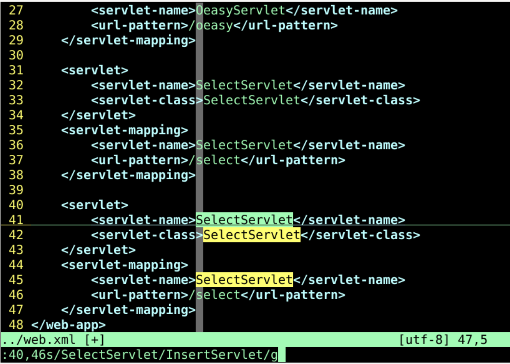
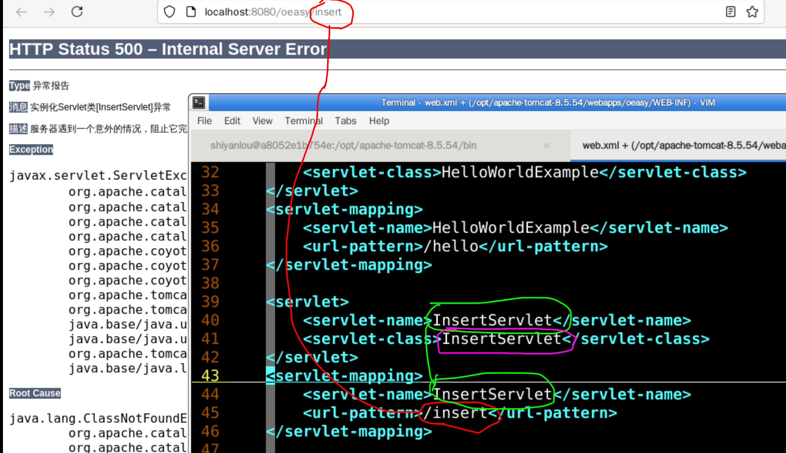
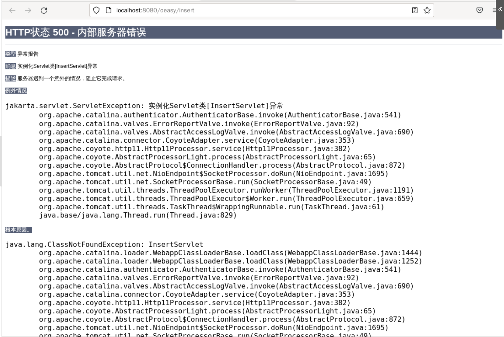
import java.sql.*;
import java.io.IOException;
import java.io.PrintWriter;
import jakarta.servlet.ServletException;
import jakarta.servlet.http.HttpServlet;
import jakarta.servlet.http.HttpServletRequest;
import jakarta.servlet.http.HttpServletResponse;
public final class InsertServlet extends HttpServlet {
private static final long serialVersionUID = 1L;
@Override
public void doGet(HttpServletRequest request,
HttpServletResponse response)
throws IOException, ServletException {
response.setContentType("text/html");
response.setCharacterEncoding("UTF-8");
PrintWriter out = response.getWriter();
Connection c = null;
Statement stmt = null;
try {
Class.forName("org.postgresql.Driver");
c = DriverManager.getConnection(
"jdbc:postgresql://localhost:5432/oeasy", "postgres",
"oeasy@pg");
out.println("Pq Connection success!<br/>");
stmt = c.createStatement();
String sql = "insert into urls(name,url) values('baidu','http://baidu.com')";
stmt.executeUpdate(sql);
stmt.close();
c.close();
} catch (Exception e) {
e.printStackTrace();
System.err.println(e.getClass().getName() + ": " + e.getMessage());
}
}
}
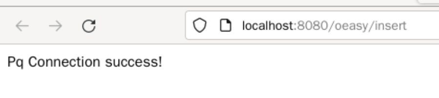
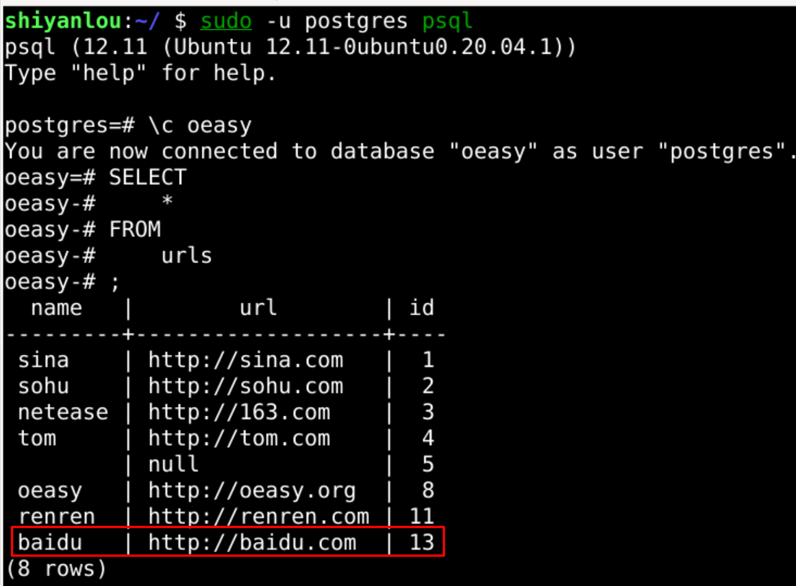
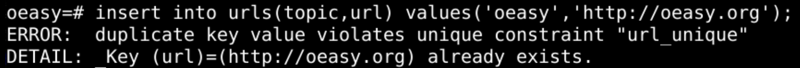
- 页面没有报错
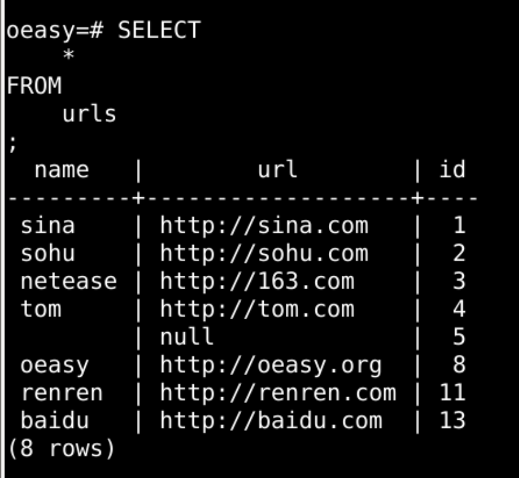
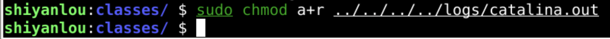
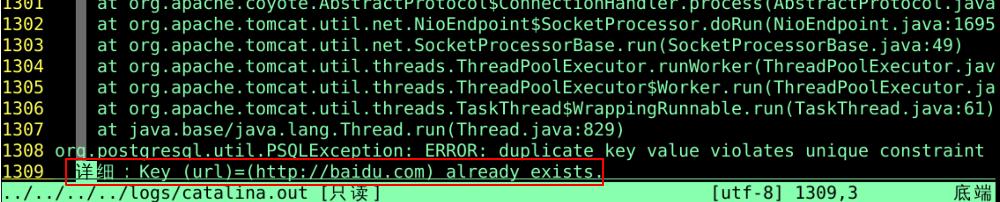
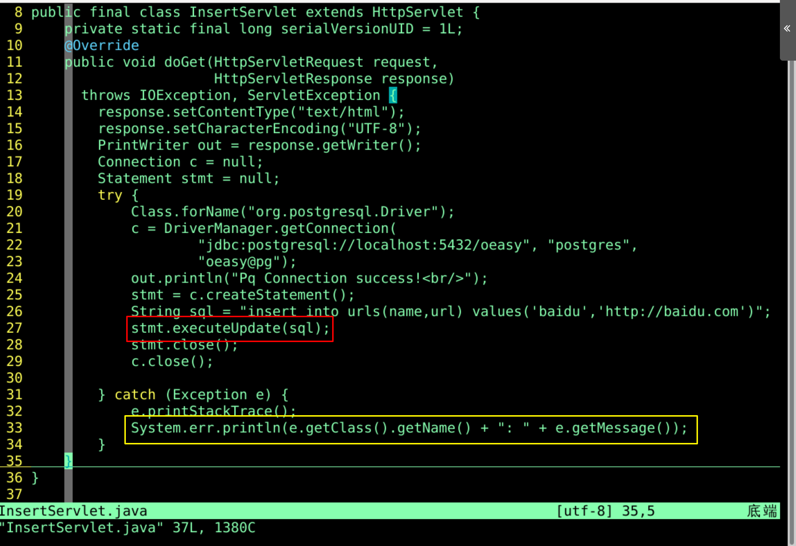
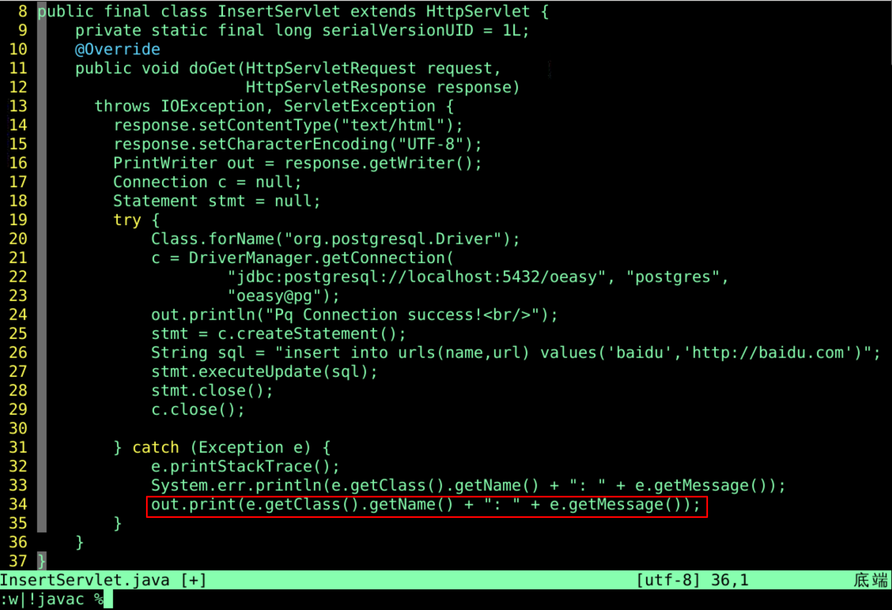
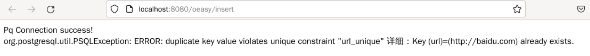
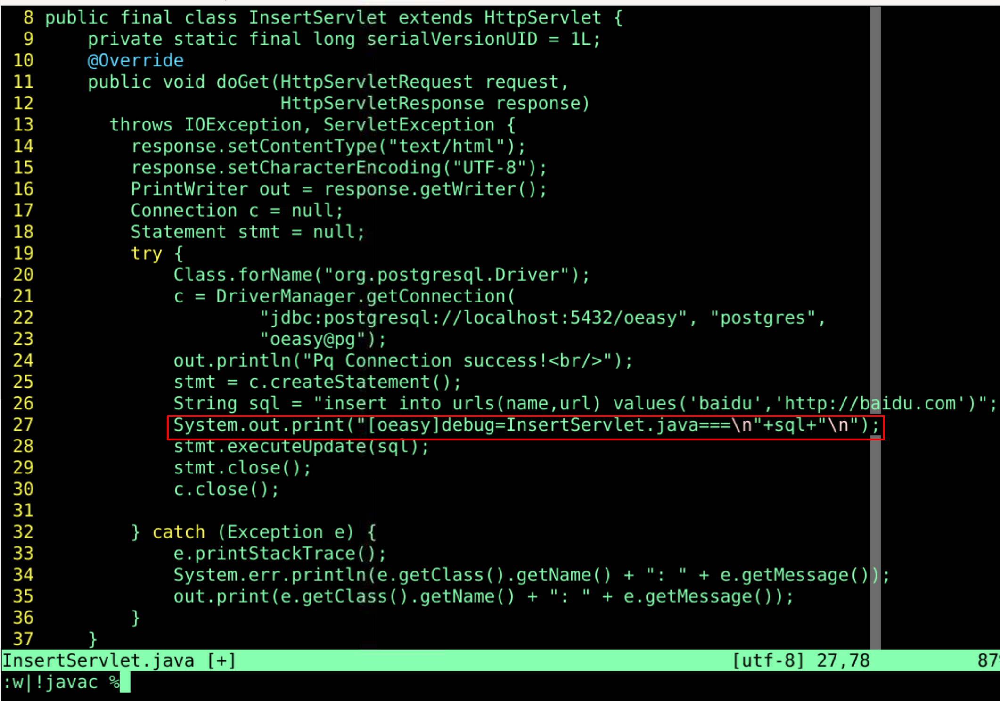
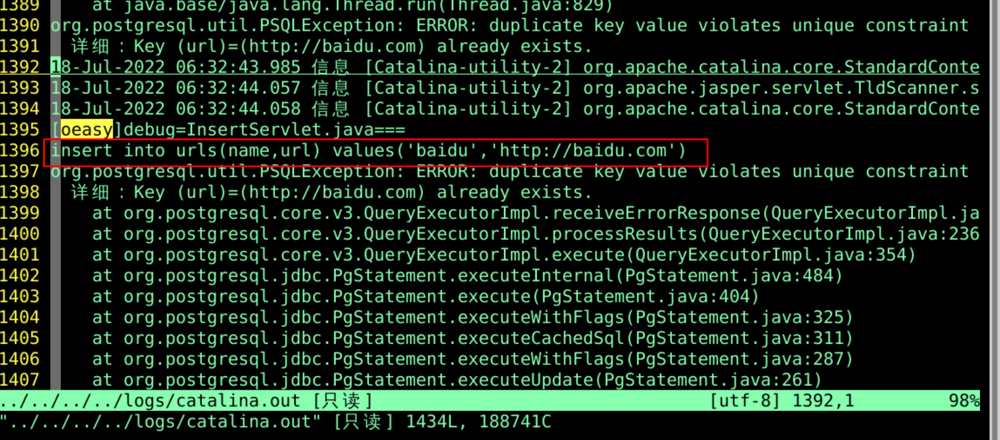
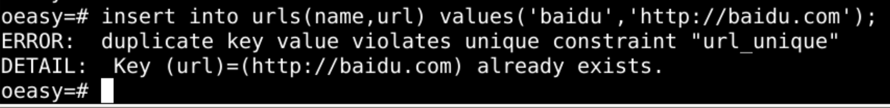